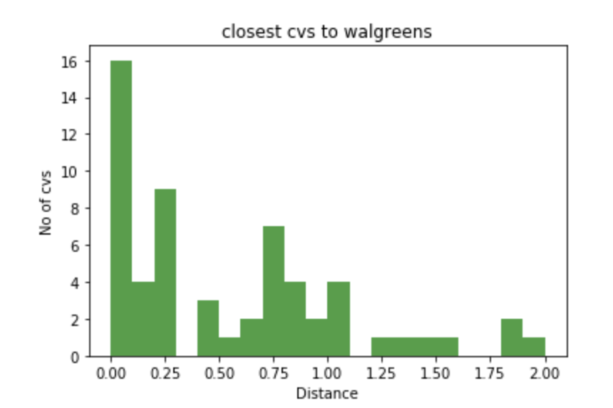
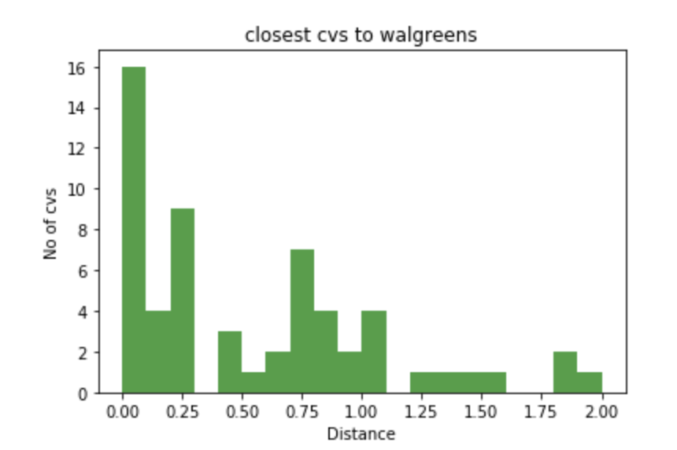
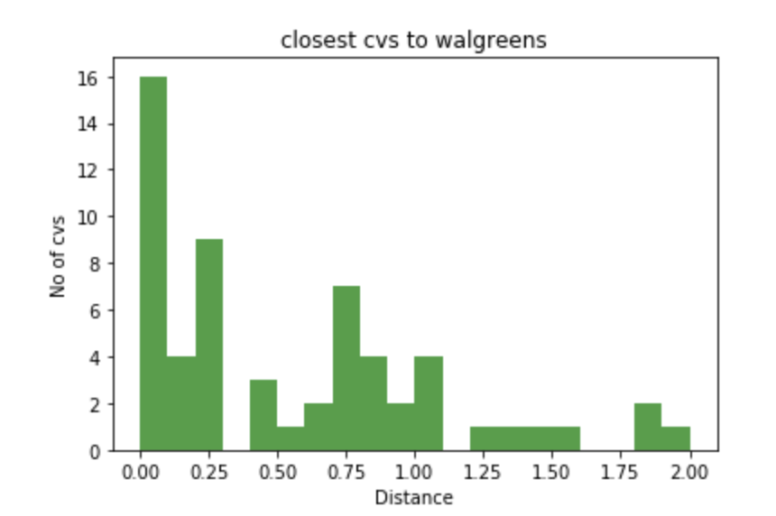

We aimed to find out the relationship between the “target” datasets and “guest” datasets. For example, we first looked for if there existed any relationship between the accessibility to the different types of food resources and average income of the neighborhood to check whether there was bias towards food distributions. In addition, by retrieving related datasets such as crime and eviction incidents in Boston, we also looked for if the number of such incidents happened would be related to nearby residents’ income.
Question: As two of the biggest pharmacy brands, CVS and Walgreen have their stores all around Boston area. We find it interesting that some CVS and Walgreen stores are next to each other. Thus, we make the following hyphothesis: for both CVS and Walgreen, they are trying to locate their stores closer to their competitor than their own stores in order to increase their brand influence and maximize their scope of service. Then we do the following steps to test our hypothesis.

This hypothesis about the location selection of CVS and Walgreen that depends on their competitors doesn't hold strongly enough. However, we can say that contrast with CVS, the locations of Walgreen stores are intensive because it has lower mean value and standard deviation. Also, it seems like Walgreen are more likely to locate their stores closer to CVS stores. Furthermore, we plot the following histograms. It is interesting that there are around 16 pairs of CVS and Walgreen right next to each other which is consistent with our intuition. It is reasonable to believe that density of CVS and Walgreen stores is proportional with the density of population. Hopefully, we can have further investigation about the location selection in next part of the project

As two of the biggest pharmacy brands, CVS and Walgreen have their stores all around Boston area. We find it interesting that some CVS and Walgreen stores are next to each other. Thus, we make the following hyphothesis: for both CVS and Walgreen, they are trying to locate their stores closer to their competitor than their own stores in order to increase their brand influence and maximize their scope of service. Then we do the following steps to test our hypothesis.
For locating new CVS stores, we use k-means algorithm to find k clusters of Walgreen stores. The locations of the clusters are the potential locations for new CVS stores that could increase brand influence. Then we did the same for new Walgreen stores.
The locations of potential new CVS and Walgreen stores are stored in our dataset for future use (new_cvs, new_wa）
Three New CVS Locations
Three New Walgreens Locations
In this step, the rating of a store is put together with the store's number of eviction/larceny cases. The data sets are refined before computation. The result stored in collection correlationCVS shows that rating and eviction cases have a pearson coefficient of 0.39326 with a 0.26090 p-value; the rating and Larceny cases have a pearson coefficient of -0.20018 with a 0.44109 p-value. Neither of them have enough evidence to reject the null hypothesis (no correlation). However, by just looking at the c.c., it is also fair to explain that Eviction implies financially instability therefore affects rating disproportionately. Larceny instead improves the security level of the store therefore can slightly affect rating proportionally. Following this explanation, we refined the model of S such that: S_i = ( (|L_i|^(c))/(|E_i|) ) times 1000, where c = |rho(rating, larceny)|/|rho(rating, eviction)|.
Some outliers (i.e. with less than 100 cases) make the p-value too high to be useful. We excluded the outliers and converted the store rating to 100 score based.
Finding the model that has the maximum (total stability S, total accessibility A) pair

If we have the chance to send 3 salesmen (1 per store), obtained the model that has the total stability >= S, total accessibility >= A?